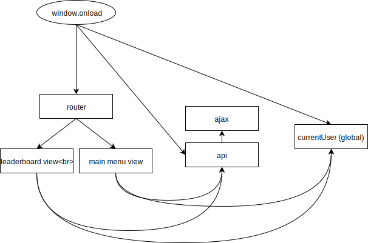
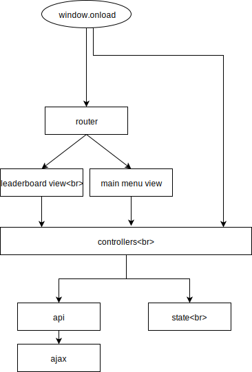
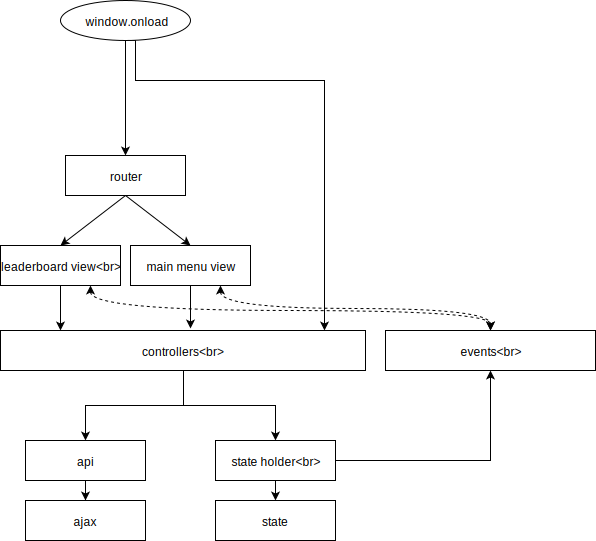

Методичка по архитектуре
Пошаговый гайд А → Б.
Для курса фронтенда в Технопарке Mail.Ru.

Как сейчас

Uh oh.
Расплетаем зависимости
У нас много зависимостей между объектами. Способ расплести эти зависимости — это делегировать все отдельному модулю, через который ходить будут все (паттерн медиатор).
Назовем этот слой контроллерами.

Код:
class ControllersStore {
constructor(api, state) {
this.user = new UserController(this, api, state);
this.leaderboard = new LeaderboardController(this, api, state);
}
}
class UserController {
constructor(store, api, state) {
this._store = store;
this._api = api;
this._state = state;
}
loadUser({forceReload = false} = {}) {
if (this._state.currentUser && !forceReload) {
return Promise.resolve(this._state.currentUser);
}
return this._api.getUser().
then((user) => {
this._state.currentUser = user;
return user;
});
}
}
class LeaderboardController {
constructor(store, api, state) {
this._store = store;
this._api = api;
this._state = state;
}
loadLeaderboard({forceReload = false} = {}) {
if (this._state.leaderboard && !forceReload) {
return Promise.resolve(this._state.leaderboard);
}
return this._api.getLeaderboard().
then((leaderboard) => {
this._state.leaderboard = leaderboard;
return leaderboard;
});
}
updateScore(newScore) {
return Promise.all([this.loadLeaderboard(), this._store.user.loadUser()]).
then((leaderboard, user) => {
leaderboard[user.name] = newScore;
return this._api.updateLeaderboardScore(newScore);
});
}
}
Добавляем контур обратной связи
Окей, мы можем из какой-то игровой вьюхи прибавить очков текущему игроку и послать изменение через `updateScore`. А что делать, когда наоборот — приходит изменение из вне и надо обновить вьюху? Например, мы в реалтайме обновляем лидерборду и сервер ответил, что у какого-то другого игрока изменился счет.
Для этого реализуем рассылку событий при изменении состояния и возможность подписываться на них (паттерн eventbus).

Код:
class StateEventBus {
constructor() {
this._subscribers = [];
}
subscribe(fn) {
this._subscribers.push(fn);
}
unsubscribe(fn) {
const index = this._subscribers.indexOf(fn);
if (index < 0) {
return;
}
this._subscribers.splice(index, 1);
}
_emit(state, key, value) {
for (const fn of this._subscribers) {
fn(state, key, value);
}
}
}
class StateHolder {
constructor(stateEventBus) {
this.state = watchObjectChanges({}, (state, key, value) => stateEventBus._emit(state, key, value));
}
}
function _watchObjectChanges(originalObject, breadcrumbs, listenerFn) {
if (!originalObject || typeof originalObject !== 'object') {
return originalObject;
}
for (const k in originalObject) {
if (originalObject.hasOwnProperty(k)) {
originalObject[k] = _watchObjectChanges(originalObject[k], breadcrumbs.concat([k]), listenerFn);
}
}
const watcher = {
set: (obj, k, v) => {
obj[k] = _watchObjectChanges(v, breadcrumbs.concat([k]), listenerFn);
listenerFn(obj, breadcrumbs.concat([k]), obj[k]);
return true;
}
};
return new Proxy(originalObject, watcher);
}
function watchObjectChanges(originalObject, listenerFn) {
return _watchObjectChanges(originalObject, [], listenerFn);
}
export default watchObjectChanges;
That's all, folks!
Содержание методички:
- 1. Паттерн медиатор. Контроллеры.
- 2. Паттерн eventbus. Подписка на изменение состояния.
⚠️
В примерах опущены проверки аргументов для краткости
У себя стоит всегда проверять, так как в функции может придти все что угодно.
⚠️
В примерах опущены комменты jsdoc
В своем коде стоит писать, чтобы и сокомандникам было все понятно (даже спустя месяц, 6 месяцев, год), и IDE все типы подсказывала.
⚠️
В примерах приведен приблизительный рабочий код
Скорее всего можно будет сделать по-удобнее. Не копипастьте сразу! :)